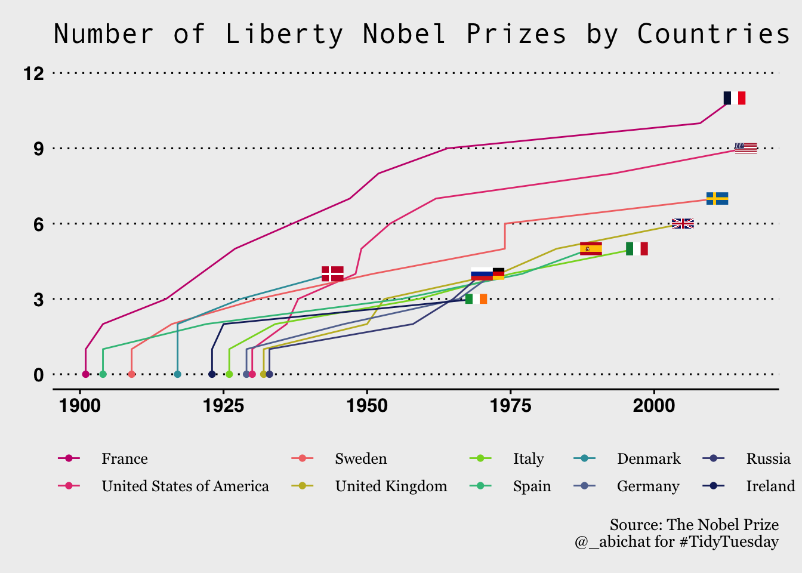

Which Country own the most Liberty Nobel Prizes? France? Ireland?
It is of my interest to use
ggplotpackage to visualize some fun data. In this post, I tried to play with a Nobel Prizes Data including countries, prize year, each prize. The goal is to plot a cumulative traceplot of Liberty Nobel Prizes for top 10 countries.
Load Packages
tidyverse package include some very useful tools such as ggplot2, tidyr and dplyr.
ggimage package was used to add country flags to ggplot layer. LaCroixColoR package used for selecting different colors.
Data
Import the data.
nobel_winners <- read_csv("data_2019-05-14.csv",
col_types = "dccccdccDccccccDcc")
str(nobel_winners)spc_tbl_ [969 × 18] (S3: spec_tbl_df/tbl_df/tbl/data.frame)
$ prize_year : num [1:969] 1901 1901 1901 1901 1901 ...
$ category : chr [1:969] "Chemistry" "Literature" "Medicine" "Peace" ...
$ prize : chr [1:969] "The Nobel Prize in Chemistry 1901" "The Nobel Prize in Literature 1901" "The Nobel Prize in Physiology or Medicine 1901" "The Nobel Peace Prize 1901" ...
$ motivation : chr [1:969] "\"in recognition of the extraordinary services he has rendered by the discovery of the laws of chemical dynamic"| __truncated__ "\"in special recognition of his poetic composition, which gives evidence of lofty idealism, artistic perfection"| __truncated__ "\"for his work on serum therapy, especially its application against diphtheria, by which he has opened a new ro"| __truncated__ NA ...
$ prize_share : chr [1:969] "1/1" "1/1" "1/1" "1/2" ...
$ laureate_id : num [1:969] 160 569 293 462 463 1 161 571 294 464 ...
$ laureate_type : chr [1:969] "Individual" "Individual" "Individual" "Individual" ...
$ full_name : chr [1:969] "Jacobus Henricus van 't Hoff" "Sully Prudhomme" "Emil Adolf von Behring" "Jean Henry Dunant" ...
$ birth_date : Date[1:969], format: "1852-08-30" "1839-03-16" ...
$ birth_city : chr [1:969] "Rotterdam" "Paris" "Hansdorf (Lawice)" "Geneva" ...
$ birth_country : chr [1:969] "Netherlands" "France" "Prussia (Poland)" "Switzerland" ...
$ gender : chr [1:969] "Male" "Male" "Male" "Male" ...
$ organization_name : chr [1:969] "Berlin University" NA "Marburg University" NA ...
$ organization_city : chr [1:969] "Berlin" NA "Marburg" NA ...
$ organization_country: chr [1:969] "Germany" NA "Germany" NA ...
$ death_date : Date[1:969], format: "1911-03-01" "1907-09-07" ...
$ death_city : chr [1:969] "Berlin" "Châtenay" "Marburg" "Heiden" ...
$ death_country : chr [1:969] "Germany" "France" "Germany" "Switzerland" ...
- attr(*, "spec")=
.. cols(
.. prize_year = col_double(),
.. category = col_character(),
.. prize = col_character(),
.. motivation = col_character(),
.. prize_share = col_character(),
.. laureate_id = col_double(),
.. laureate_type = col_character(),
.. full_name = col_character(),
.. birth_date = col_date(format = ""),
.. birth_city = col_character(),
.. birth_country = col_character(),
.. gender = col_character(),
.. organization_name = col_character(),
.. organization_city = col_character(),
.. organization_country = col_character(),
.. death_date = col_date(format = ""),
.. death_city = col_character(),
.. death_country = col_character()
.. )
- attr(*, "problems")=<externalptr> [1] "Chemistry" "Literature" "Medicine" "Peace" "Physics"
[6] "Economics" tribble function allows to create a table by columns. ~country will generate a new columns.
Tables
pull() function is similar to use [] to return the value of one column.
Adding some columns such as the total number of Liberty Prizes (n_prize), the first year of prize, the last year and the cumulative prizes.
nobel_countries <-
nobel_winners %>%
filter(birth_country %in% countries, category == "Literature") %>%
select(prize_year, birth_country) %>%
arrange(prize_year) %>%
group_by(birth_country) %>%
mutate(n_prize = n(),
first_prize = min(prize_year),
last_prize = max(prize_year),
cum = row_number()
) %>%
ungroup()
nobel_countries# A tibble: 58 × 6
prize_year birth_country n_prize first_prize last_prize cum
<dbl> <chr> <int> <dbl> <dbl> <int>
1 1901 France 11 1901 2014 1
2 1904 France 11 1901 2014 2
3 1904 Spain 5 1904 1989 1
4 1909 Sweden 7 1909 2011 1
5 1915 France 11 1901 2014 3
6 1916 Sweden 7 1909 2011 2
7 1917 Denmark 4 1917 1944 1
8 1917 Denmark 4 1917 1944 2
9 1921 France 11 1901 2014 4
10 1922 Spain 5 1904 1989 2
# … with 48 more rowsnobel_countries <-
nobel_countries %>%
filter(cum == 1) %>%
mutate(cum = 0) %>%
bind_rows(nobel_countries) %>%
arrange(prize_year, cum) %>%
mutate(birth_country = fct_reorder(birth_country, n_prize, .desc = TRUE))
nobel_countries# A tibble: 68 × 6
prize_year birth_country n_prize first_prize last_prize cum
<dbl> <fct> <int> <dbl> <dbl> <dbl>
1 1901 France 11 1901 2014 0
2 1901 France 11 1901 2014 1
3 1904 Spain 5 1904 1989 0
4 1904 Spain 5 1904 1989 1
5 1904 France 11 1901 2014 2
6 1909 Sweden 7 1909 2011 0
7 1909 Sweden 7 1909 2011 1
8 1915 France 11 1901 2014 3
9 1916 Sweden 7 1909 2011 2
10 1917 Denmark 4 1917 1944 0
# … with 58 more rowsfirst_last_nobel <-
nobel_countries %>%
select(birth_country, n_prize, first_prize, last_prize) %>%
mutate(birth_country = as.character(birth_country)) %>%
distinct() %>%
left_join(df_countrycode, by=c("birth_country" = "country"))
first_last_nobel# A tibble: 10 × 5
birth_country n_prize first_prize last_prize code
<chr> <int> <dbl> <dbl> <chr>
1 France 11 1901 2014 FR
2 Spain 5 1904 1989 ES
3 Sweden 7 1909 2011 SE
4 Denmark 4 1917 1944 DK
5 Ireland 3 1923 1969 IE
6 Italy 5 1926 1997 IT
7 Germany 4 1929 1972 DE
8 United States of America 9 1930 2016 US
9 United Kingdom 6 1932 2005 GB
10 Russia 4 1933 1970 RU Plot
pp1 <- ggplot(nobel_countries) +
aes(x = prize_year, y = cum, group = birth_country) +
geom_line(aes(color = birth_country)) +
geom_point(data = first_last_nobel, y = 0,
aes(x = first_prize, color =birth_country)) +
geom_flag(data = first_last_nobel, size = 0.03, asp= 2,
aes(x= last_prize, y = n_prize, image = code)) +
scale_color_manual(values = lacroix_palette("PassionFruit", n = 10, type = "continuous")) +
scale_y_continuous(limits = c(NA, 12), breaks = c(0,3,6,9,12)) +
labs(title = "Number of Liberty Nobel Prizes by Countries",
color = NULL,
caption = "Source: The Nobel Prize\n@_abichat for #TidyTuesday") +
theme_wsj(color = "gray") +
theme(legend.position = "bottom",
plot.caption = element_text(size = 10, family = "Georgia"),
plot.title = element_text(size = 18, family = "Andale Mono"),
legend.text = element_text(family = "Georgia")
)
pp1
Animation
Finally, let’s use gganimate package to add some animation.